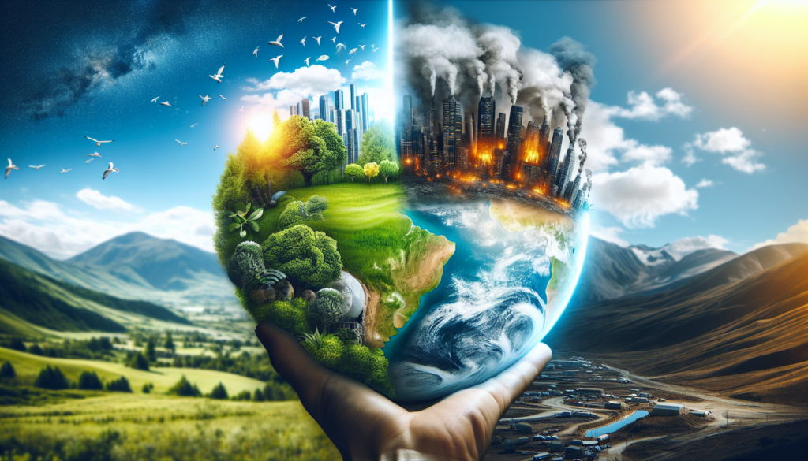

Tempestes més intenses
L'augment de temperatures provoca tempestes més intenses i freqüents, causant inundacions que destrueixen habitatges i comunitats, amb grans pèrdues econòmiques i vides humanes.
El canvi climàtic és el conjunt de canvis a llarg termini de les temperatures i patrons climàtic, aquests canvis poden ser deguts a causes naturals, però, des de fa uns quants anys, les principals causes del canvi climàtic han sigut les activitats humanes, principalment la crema de combustibles fòssils com el carbó, el petroli i el gas, produint gasos que impedeixen que la calor surti de la Terra.
L'augment de temperatures provoca tempestes més intenses i freqüents, causant inundacions que destrueixen habitatges i comunitats, amb grans pèrdues econòmiques i vides humanes.
El canvi climàtic intensifica les sequeres mitjançant l'augment de temperatures i l'alteració dels patrons de precipitació, resultant en sòls més secs i menys reserves d'aigua
El canvi climàtic augmenta el nivell del mar per la fosa de glaceres i l'expansió tèrmica, amenaçant les zones costaneres. Això provoca inundacions i erosió, amb el risc que illes baixes i ciutats costaneres quedin submergides.
El canvi climàtic altera els hàbitats naturals i empeny moltes espècies a l'extinció, afectant la seva capacitat d'adaptació. Espècies com els ossos polars i els amfibis són especialment amenaçades, reduint la biodiversitat global.
El canvi climàtic perjudica l'agricultura alterant els patrons de pluja i augmentant els esdeveniments climàtics extrems, reduint la productivitat dels cultius.
El canvi climàtic perjudica la salut humana augmentant malalties respiratòries i infeccioses, provocant cops de calor i deshidratació, i causant malnutrició, especialment en nens.